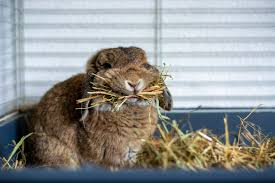

At PurrPets, we teach the "Golden Rule" of rabbit feeding. A rabbit’s digestive tract is like a factory that never stops moving; if the conveyor belt stops, they get sick!

Use this table to balance your rabbit's daily plate:
| Food Group | Daily Amount | The "PurrPets" Choice |
|---|---|---|
| Grass Hay | Unlimited | Timothy, Orchard, or Meadow Hay. |
| Fresh Greens | 1-2 Cups | Romaine, Cilantro, Parsley, Kale. |
| Pellets | 1/4 Cup | Plain brown pellets (No colorful bits!). |
| Treats | 1 Teaspoon | Small piece of Apple (no seeds) or Banana. |
Never feed your rabbit the following items, as they can be fatal:
Rabbits adore bananas. However, because it's so high in sugar, it can lead to obesity and tooth decay. Use banana only as a reward for training—unless you want a bunny that follows you around the house demanding fruit like a tiny, furry debt collector.